三力平衡问题是共点力平衡中最常见的问题，
常用的解决方法有力的合成法、矢量三角形法、相似三角形法、拉密定理、外接圆法
三力平衡–最小值
- 如图所示，一质量为m的光滑小球放置在倾角为θ的固定斜面上，用垂直于斜面的挡板挡住，挡板绕O点顺时针缓慢地转向竖直位置的过程中，下列判断正确的是（ ）
C．小球对斜面的压力先减小后增大 | D．小球对斜面的压力一直减小 |
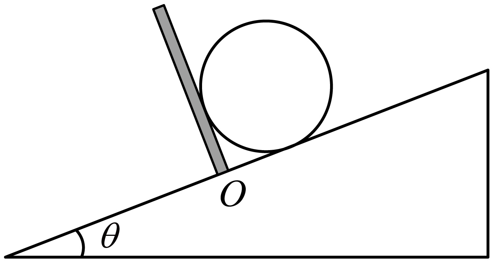
外接圆法
4．（多选）如图，轻杆一端连在光滑的铰链上，另一端固定着质量为m的小球，初始时，在球上施加作用力F使杆处于水平静止，力F和杆的夹角α=120°。现保持α角不变，改变力F的大小缓慢向上旋转轻杆，直至杆与水平方向成60°角，在这个过程中（ ）
A．力F逐渐增大
B．力F逐渐减小
C．杆对小球的弹力先增大后减小
D．杆对小球的弹力先减小后增大
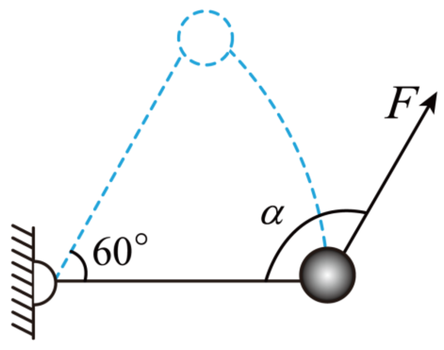
【解析】AB.由于轻杆一端连在光滑的铰链上，故杆对小球的作用力始终沿着杆的方向，设转动过程中杆与竖直方向夹角为，由平衡条件可得，垂直杆方向满足： Fsin60^\circ = mg\sin\theta 杆转过60°过程，从90°减小到30°，可知力F逐渐减小，A错误，B正确； CD．沿杆方向满足: F_{杆}=F\cos60^\circ-mg\cos\theta 联立上述两式可得 F_{杆}=\frac{2\sqrt{3}}{3}mg\sin(\theta-60^\circ) 其中利用了数学里的辅助角公式: a\sin\theta+b\cos\theta=\sqrt{a^2+b^2}[\sin\theta\cdot\frac{a}{\sqrt{a^2+b^2}}+\cos\theta\cdot\frac{b}{\sqrt{a^2+b^2}}]\\ =\sqrt{a^2+b^2}\sin(\theta+\varphi) \\ 其中：\sin\varphi = \frac{a}{\sqrt{a^2+b^2}};\\ \cos\varpi = \frac{b}{\sqrt{a^2+b^2}} 可知当时，，故从90°减小到30°的过程，sin值先减小为0后为负，绝对值增大。负号代表沿着杆向外。杆对小球的弹力先减小为零后反向增大，C错误，D正确。 故选BD。
除了正交分解，通过解析法分析力的变化。还可以作图。由于F和杆夹角始终不变，三力平衡，重力mg，F，杆的力三个力组成的矢量三角形。F和杆的力夹角不变，因此可以补充外接圆。注意杆的力方向变化。
ggb动画演示https://www.geogebra.org/classic/mnmzec6s
8．我国的新疆棉以绒长、品质好、产量高著称于世，目前新疆地区的棉田大部分是通过如图甲所示的自动采棉机采收。自动采棉机在采摘棉花的同时将棉花打包成圆柱形棉包，通过采棉机后侧可以旋转的支架平稳将其放下，这个过程可以简化为如图乙所示模型：质量为m的棉包放在“V”型挡板上，两板间夹角为120°固定不变，“V”型挡板可绕O轴在竖直面内转动。在使OB板由水平位置顺时针缓慢转动到竖直位置过程中，忽略“V”型挡板对棉包的摩擦力，已知重力加速度为g，下列说法正确的是（ ）
A．棉包对OA板的压力逐渐增大
B．棉包对OB板的压力先增大后减小
C．当OB板转过30°时，棉包对OB板的作用力大小为mg
D．当OB板转过60°时，棉包对OA板的作用力大小为mg
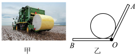
【解析】三力平衡，三个力重力、支持力F_{NOB},F_{NOA} ，两个支持力夹角始终不变。矢量三角形外接圆。可以看到OA增大，OB减小。注意当OA板水平后，OB板弹力消失，变成在斜面运动。斜面OA越陡，OA板弹力越小。
晾衣绳模型
9．如图所示，细绳一端固定在A点，另一端跨过与A等高的光滑定滑轮B后悬挂一个砂桶Q（含砂子）。现有另一个砂桶P（含砂子）通过光滑挂钩挂在A、B之间的细绳上，稳定后挂钩下降至C点，∠ACB＝120°，下列说法正确的是（ ）
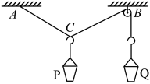
A．若只增加Q桶中的砂子，再次平衡后P桶位置不变
B．若只增加P桶中的砂子，再次平衡后P桶位置不变
C．若在两桶内增加相同质量的砂子，再次平衡后P桶位置不变
D．若在两桶内增加相同质量的砂子，再次平衡后Q桶位置上升
9.【解析】C
[详解]AB.对砂桶Q分析有，Q受到细绳的拉力大小 T=G_{\mathbb{Q}} 设AC、BC之间的夹角为\theta,对C点分析可知c点受三个力而平衡，由题意知， C点两侧的绳张力相等，故有
2Tcos\frac \theta 2= G_{\mathrm{P} }
联立可得 2G_{\mathbb{Q}}\cos\frac\theta2=G_{\mathbb{P}} 故只增加 Q 桶中的砂子，即只增加 G\varrho,夹角\theta变大，P桶上升，只增加 P 桶中的 砂子，即只增加 Gp,夹角\theta变小，P桶下降，故AB 错误；
CD.由 2G_{\mathbb{Q}}\cos\frac\theta2=G_{\mathbb{P}} 可知，当\theta=120^{\circ}时有 G_{\mathbb{Q}}=G_{\mathbb{P}} 此时若在两砂桶内增加相同质量的砂子，上式依然成立，则P桶的位置不变，故
{\mathrm{C}}正确，D 错误。
故选 C。
6.湖北某小区晾晒区的并排等高门型晾衣架AA^\prime BB^{\prime}CC^{\prime}DD^{\prime}如图所示，AB、CD杆均水平，不可伸长的轻绳的一端 M固定在AB中点上，另一端 N 系在 C 点，一衣架(含所挂衣物)的挂钩可在轻绳上无摩擦滑动。将轻绳 N端从 C点沿CD方向缓慢移动至 D 点，整个过程中衣物始终没有着地。则此过程中轻绳上张 力大小的变化情况是( )
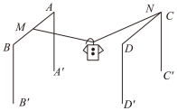
A. 一直减小
B. 先减小后增大
C. 一直增大
D. 先增大后减小
6.【解析】B
【详解】由题意可知，将轻绳N端从C点沿方向缓慢移动至D点过程中，绳子的夹角先减小后增大，由于合力的大小不变，故可得此过程中轻绳上张力大小的变化情况是先减小后增大，ACD错误，B正确，
故选B。
10.如图所示，一根绳的两端分别固定在两座山顶处，重为120N 的猴子抓住套在绳子上的 滑环在两座山间滑动，某时刻猴子在最低点处静止，绳子拉力与水平方向的夹角为\theta=37^{\circ},重力加速度 g=10m/s^2, sin37°=0.6, cos37°=0.8,则此时绳子的张力大小为(绳处于拉直状态)( )
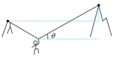
A.60N
B. 80N
C. 100N
D. 120N
5．两相同的楔形木块A、B叠放后分别以图1、2两种方式在水平外力F1和竖直外力F2作用下，挨着竖直墙面保持静止状态，则在此两种方式中，木块B受力个数之比为（ ） 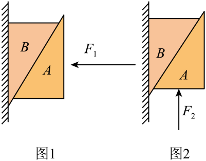
6．用两段等长的轻质细线将甲、乙两个小球连接并悬挂于O点，如图甲所示，小球甲受到水平向右的力3F的作用，小球乙受到水平向左的力F的作用，平衡时细线都被拉紧，则系统平衡时两球的位置情况如图乙所示，则a、b两球质量之比为（ ）
A．1:1 B．1:2 C．2:1 D．2:3 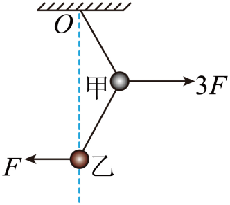
7．有P、Q、N三物块质量均为m，它们竖直叠放在水平面上且处于静止状态，现对Q施加一个水平向右的推力F，三个物块依然保持静止状态，则施加力F之后（ ） 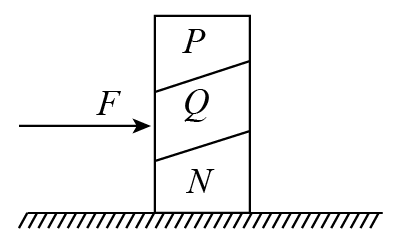
A．P、Q两物体之间的摩擦力增大 B．Q、N两物体之间的摩擦力减小
C．Q一定受到5个力的作用 D．Q、N两物体之间的压力增大
8．在甲、乙、丙、丁四幅图中，滑轮本身所受的重力忽略不计，滑轮的轴安装在一根轻木杆P上，一根轻绳绕过滑轮，端固定在墙上，端下面挂一个质量为的重物，当滑轮和重物都静止不动时，甲、丙、丙、丁图中木杆P与竖直方向的夹角均为，乙图中木杆P竖直。假设甲、乙、丙、丁四幅图中滑轮受到木杆P的弹力的大小依次为、、、，则以下判断正确的是（ ）
- B．C． D． 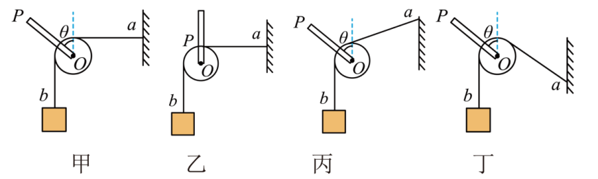
9．如图所示，大圆环固定在竖直平面内，一根轻弹簧一端固定于圆环的最高点A， 另一端系一光滑小环，小环套在大圆环上可自由滑动，O点为大圆环的圆心。小环恰好在大圆环上图中位置B点处于静止状态，此时（ ）
A．弹簧可能处于压缩状态
B．大圆环对小环的弹力方向指向圆心O
C．小环可能只受到两个力的作用
D．大圆环对小环的弹力大小等于小环的重力 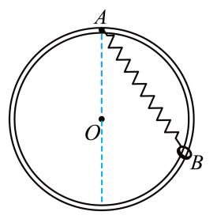
10．（多选）如图所示，A是一质量为m的盒子，B的质量为，它们间用轻绳相连，跨过光滑的定滑轮，A置于倾角为α=30°的斜面上，B悬于斜面之外，整个系统处于静止状态。现在向A中缓慢地加入沙子，直至A将要滑动的过程中（ ）
A．绳子所受拉力始终不变 B．斜面所受地面的摩擦力逐渐增大
C．定滑轮所受作用力始终不变 D．A所受的摩擦力先减小后反向增大 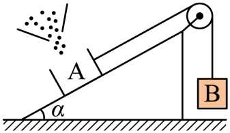 11．（多选）如图所示，墙角上有A、B、C、D四个点，一只蜘蛛通过AO和BO两根蛛丝将自己悬挂在结点O休息，其中虚线OD沿竖直方向，蛛丝AO水平，蛛丝BO与竖直方向的夹角为30°，蜘蛛的重力为G。某时刻蛛丝AO由于某个原因突然断裂，它需要在墙上ACD之间选一点E重新拉一根蛛丝EO，最后蜘蛛重新挂在O点休息并保持O点位置不变。当蜘蛛再次休息时，下列说法正确的是（ ）
A．蛛丝BO拉力的最小值为0 B．蛛丝BO拉力的最大值为2G
C．蛛丝EO拉力的最大值为2*G D．蛛丝EO拉力的最小值为0.5G*
12．如图所示，倾角的固定斜面上放有物块A和B，A、B之间拴接有劲度系数的轻弹簧，物块B和小桶C由跨过光滑的定滑轮的轻绳连接。开始时弹簧处于原长， A、B、C均处静止状态，且B刚好不受摩擦力，轻弹簧、轻绳平行于斜面。已知A、B的质量 ，A、B 与斜面间的动摩擦因数均为0.875，最大静摩擦力等于滑动摩擦力，重力加速度g取 ，，。
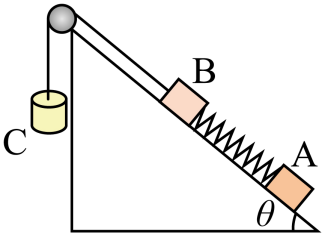 （1） 求C的质量；
（2） 求开始时A受到的摩擦力；
（3）若向C中缓慢加入沙子，当B刚要向上运动还没动时，加入沙子的总质量记为，继续缓慢加入沙子，B缓慢向上运动，当A 刚要向上运动还没动时（C未触地，弹簧处于弹性限度范围内），加入沙子的总质量记为；求：
① ②A刚要向上运动时， B已经向上运动的距离。
参考答案：
1．A
【详解】ABC．火箭升空时，其尾部向下喷气，火箭箭体与被喷出的气体是一对相互作用的物体，火箭向下喷气时，喷出的气体同时对火箭产生向上的反作用力，即为火箭上升的推动力，此动力并不是由周围的空气对火箭的反作用力提供的，因而与是否飞出大气层、是否存在空气无关，故A正确，BC错误；
D．火箭运载飞船进入轨道后，飞船与地球之间依然存在相互吸引力，即地球吸引飞船，飞船吸引地球，这是一对作用力与反作用力，故D错误。
故选A。
2．C
【详解】将力F分解为垂直于劈面的两个方向，大小均为FN，由平行四边形定则可得
解得
故选C。
3．B
【详解】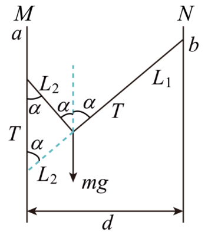
AC．设绳长为L，两杆之间的距离为d，根据平衡条件
b点上移或下移，α不变，T不变，故AC错误；
B．N右移，d增大、α增大、cosα减小、T增大，故B正确；
D．m增大、α角不变、悬挂点不变，故D错误。
故选B。
4．B
【详解】A．根据共点力平衡有
可得
烹煮食物时，各杆对地面的压力大小均为，故A错误；
B．烹煮食物时，各杆受到地面的摩擦力大小均为
故B正确；
C．拉动吊绳过程中，炊具与食物受力平衡，故绳子的拉力等于炊具与食物的重力，故大小不变，故C错误；
D．拉动吊绳过程中，节点受到竖直向下的绳子拉力、斜向上的的绳子拉力，以及铁钩对吊绳的作用力，在拉动吊绳过程中，斜向上的的绳子拉力的方向改变，根据共点力平衡可知铁钩对吊绳的作用力方向改变，故D错误。
故选B。
5．C
【详解】图甲中，根据整体法可知，木块B除了受重力外，一定受到墙面水平向右的弹力（与水平推力平衡）和竖直向上的静摩擦力（与重力平衡），隔离B分析，其一定还受到A的弹力（垂直于接触面向左上方），隔离A分析，A受到重力、水平向左的推力、B对其垂直于接触面向右下的弹力，这样的三个力不可能使A平衡，所以A一定还要受到B对其沿接触面斜向右上的静摩擦力才能平衡，可知B一定受到A沿接触面斜向左下的静摩擦力，故B共受5个力的作用；
图乙中，据整体法可知B与墙面间既无弹力也无摩擦力，所以B受重力和A的弹力及摩擦力共3个力的作用。
则在此两种方式中，木块B受力个数之比为5∶3。
故选C。
6．A
【详解】a受到3F水平向右的力，b受到F的水平向左的力，以整体为研究对象，分析受力如图：
设Oa绳与竖直方向的夹角为α，则由平衡条件得：；以b球为研究对象，受力如图．
设ab绳与竖直方向的夹角为β，则由平衡条件得：；由几何关系得到：α=β；联立解得：ma=mb．故A正确，BCD错误；故选A．
【点睛】本题考查共点力作用下物体的平衡问题，采用隔离法和整体法，由平衡条件分析物体的状态，考查灵活选择研究对象的能力．
7．D
【详解】A．对P受力分析可知，P受重力、支持力和沿斜面向上的摩擦力，P受力情况不变，故PQ间的摩擦力不变，A错误；
B．对PQ整体受力分析可知，PQ受重力、支持力、摩擦力及推力，由于水平推力的作用，故BC间的摩擦力可能减小，也可能增加，选项B错误；
C．若F沿斜面向上的分力与PQ重力沿斜面方向上的分力平衡，则Q可以不受N的摩擦力作用；故Q将受重力、压力、支持力PQ的摩擦力及推力五个力的作用；若QN间有摩擦力，则B受6个力的作用，C错误；
D．因F有垂直于斜面的分效果，故QN间的压力一定增大，D正确；
故选D。
8．B
【分析】由题可知本题考查力的平衡。
【详解】轻绳上的拉力大小等于重物所受的重力，设滑轮两侧轻绳之间的夹角为，滑轮受到木杆P的弹力等于滑轮两侧轻绳拉力的合力，即
由夹角关系可得
故B正确，ACD错误。
故选B。
9．D
【详解】C．小环一定受竖直向下的重力，弹簧的弹力沿弹簧方向，而支持力沿OB方向，若只受弹簧的弹力或支持力，不可能处于静止状态，因此小环不可能只受到两个力的作用，C错误；
AB．若弹簧处于压缩状态，弹簧对小球的弹力方向沿弹簧向外，还受到重力和圆环对小球指向圆心的弹力，这3个力不可能平衡，所以弹簧处于拉伸状态，受力如图：
大圆环对小环的弹力方向背离圆心O，AB错误；
D．依据力三角形和几何三角形相似，对应边成比例，有
可见大圆环对小环的弹力大小一定等于小球的重力，D正确。
故选D。
10．AC
【详解】A．对B受力分析如图
由受力分析可知
B始终保持静止，故绳上拉力不变，故A正确；
B．对A，B和斜面整体受力分析如图
由受力分析可知，斜面和地面之间不存在摩擦力，故B错误；
C．定滑轮始终保持静止，且绳上力保持不变，故定滑轮所受作用力保持不变，故C正确；
D．添沙子之前对A受力分析如下图
由受力分析可知
又因为
故A一开始与斜面之间没有摩擦力。
设添沙子后A与沙子的总质量为，受力分析如下图
故随着A与沙子的总质量不断增大，静摩擦力也不断增大，故D错误。
故选AC。
11．AD
【详解】对节点O受力分析如图
在蛛丝EO从A点移动到D点的过程中，蛛丝EO上的拉力和蛛丝BO上的拉力的合力始终与蜘蛛的重力G等大反向，蛛丝BO上的拉力方向始终不变，蜘蛛的重力G大小和方向都不变，符合图解法的适用条件，改变蛛丝EO上的拉力的方向绘制平行四边形，各力的变化如下图
由图可知，当蛛丝EO上的拉力和蛛丝BO上的拉力垂直时，蛛丝EO上的拉力有最小值，满足
当蛛丝EO上的拉力沿水平方向的时候，蛛丝BO上的拉力有最大值，满足
当蛛丝EO上的拉力沿竖直方向的时候，蛛丝EO上的拉力有最大值，蛛丝BO上的拉力有最小值，满足
故AD正确，BC错误。
故选AD。
12．（1）；（2）；（3），
【详解】（1）把B、C视为整体，由平衡条件有
解得
（2）对A进行受力分析，由平衡条件有
解得
（3）①当B刚要向上运动时，将B、C和沙子视为整体，由平衡条件有
当A刚要向上运动时，将A、B、C和沙子视为整体，则有
解得
②当A刚要往上运动时，对A进行受力分析，则有
由胡克定律有
解得
说明B已经向上运动了。